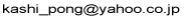

Go To English Page
鹿島 久嗣 (かしま ひさし) の プロフィール

<経歴>
- 1975年: 生まれる
- 1997年3月: 京都大学 工学部 数理工学科 卒業
- 1999年3月: 京都大学 大学院工学研究科 応用システム科学専攻 博士前期課程 修了（修士）
- 1999年4月～2009年7月: IBM東京基礎研究所
- 2007年3月: 京都大学 大学院情報学研究科 知能情報学専攻 博士後期課程 修了（博士（情報学））
- 2008年8月～10月: Max Planck Institute for Biological Cybernetics, Department of Empirical Inference, Visiting Research Scientist
- 2009年8月～2014年3月: 東京大学 大学院情報理工学系研究科 数理情報学専攻 准教授
- 2010年3月～2014年3月: 国立情報学研究所 客員准教授（兼任）
- 2010年10月～2014年3月: 科学技術振興機構（JST）さきがけ「知の創生と情報社会」研究員（兼任）
- 2014年4月～: 京都大学 大学院情報学研究科 知能情報学専攻 教授
- 2016年10月～: 理化学研究所 革新知能統合研究センター ヒューマンコンピュテーションチーム チームリーダー（兼任）
<受賞歴>
<学会等の活動>
(更新していません…)
- 人工知能学会、電子情報通信学会、情報処理学会 会員
- 2003年～2007年： 情報処理学会 会誌編集委員 （専門委員会 基礎・理論分野）
- 国際会議のプログラム委員等
- 2007年 Program Comittee Member, The 10th International Conference on Discovery Science (DS-2007)
- 2008年 Program Comittee Member, The Pacific-Asia Conference on Knowledge Discovery and Data Mining (PAKDD
2008)
- 2008年 Program Comittee Member, The 1st International Workshop on Algorithms for Large-Scale Information
Processing in Knowledge Discovery (ALSIP 2008) (In conjunction with PAKDD 2008)
- 2008年 副プログラム委員長, 第11回情報論的学習理論ワークショップ(IBIS2008)
- 2009年 Program Comittee Member, 2008 NIPS workshop on Structured Input, Structured Output
- 2009年 Program Comittee Member, The Pacific-Asia Conference on Knowledge Discovery and Data Mining (PAKDD
2009)
- 2009年 Program Comittee Member, The SIAM Conference on Data Mining (SDM 2009)
- 2009年 Program Comittee Member, The 1st Asian Conference on Machine Learning (ACML 2009)
- 2009年 プログラム委員, 第12回情報論的学習理論ワークショップ(IBIS2009)